6Reinforcement Learning
- How reinforcement learning is used to optimize human preferences
- Mathematics and intuitions for policy-gradient algorithms
- The derivations and trade-offs of different algorithms
- New algorithms for reasoning models, such as GRPO, GSPO, and CISPO
- Implementation details of modern RLHF stacks
In the RLHF process, the reinforcement learning algorithm slowly updates the model’s weights with respect to feedback from a reward model. The policy – the model being trained – generates completions to prompts in the training set, then the reward model scores them, and then the reinforcement learning optimizer takes gradient steps based on this information (see fig. 6.1 for an overview). This chapter explains the mathematics and trade-offs across various algorithms used to learn from the signal the reward model gives to on-policy data (i.e., data generated by the current version of the model being trained). These algorithms are run for a period of many epochs, often thousands or millions of batches across a larger set of prompts, with gradient updates in between each of them.
The algorithms that popularized RLHF for language models were policy-gradient reinforcement learning algorithms. These algorithms, such as Proximal Policy Optimization (PPO), Group Relative Policy Optimization (GRPO), and REINFORCE, use recently generated samples to update their model (rather than storing scores in a replay buffer like algorithms, e.g. Deep Q-Networks, DQN, used in popular projects such as AlphaGo). In this section we will cover the fundamentals of the policy gradient algorithms and how they are used in the modern RLHF framework.
At a machine learning level, this section is the subject with the highest complexity in the RLHF process. Though, as with most modern AI models, the largest determining factor on its success is the data provided as inputs to the process.
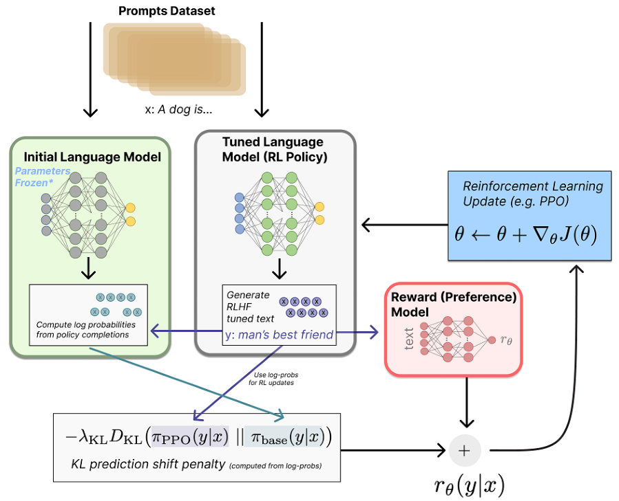
When RLHF came onto the scene with ChatGPT, it was largely known that they used a variant of PPO, and many initial efforts were built upon that. Over time, multiple research projects showed the promise of REINFORCE-style algorithms [1] [2], touted for its simplicity over PPO without a reward model (saves memory and therefore the number of GPUs required) and with simpler value estimation (no Generalized Advantage Estimation, GAE, which is a method to compute advantages used for variance reduction in policy gradient algorithms). More algorithms have emerged, including Group Relative Policy Optimization, which is particularly popular with reasoning tasks, but in general many of these algorithms can be tuned to fit a specific task. In this chapter, we cover the core policy gradient setup and the three algorithms mentioned above due to their central role in the establishment of a canonical RLHF literature.
This chapter uses (s, a) notation from the reinforcement learning literature, where s denotes states and a denotes actions. In the language model context, you will often see (x, y) instead, where x is the prompt and y is the completion. The (s, a) framing is more general—these algorithms were designed for sequential decision problems where actions are taken at each timestep. However, many RLHF implementations treat the entire completion as a single action, making the (x, y) notation equally valid.
#6.1 Policy Gradient Algorithms
Reinforcement learning algorithms are designed to maximize the future, discounted reward across a trajectory of states, s ∈S, and actions, a ∈A (for more notation, see Appendix a, Definitions). The objective of the agent, often called the return, is the sum of discounted future rewards (where γ ∈[0, 1] is a factor that prioritizes near-term rewards) at a given time t:
The return definition can also be estimated as:
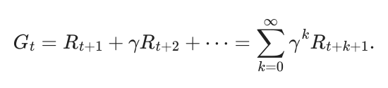
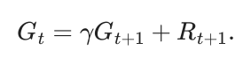
This return is the basis for learning a value function V (s) that is the estimated future return given a current state:
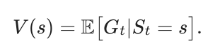
All policy gradient algorithms optimize a policy πθ(a ∣s) to maximize expected return; this objective can be expressed using the induced value function Vπθ(s), where the superscript indicates the value is computed under that specific policy.
Where dπθ(s) is the state-visitation distribution induced by policy πθ(a ∣s), the objective we maximize can be written as:
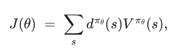
In a finite Markov Decision Process (MDP, the mathematical framework used in the majority of RL work formalizing states, actions, and transitions [3]) this is a sum over all states, but in practice we never compute it exactly. Instead, we estimate it from data by sampling rollouts—trajectories of actions sampled by a policy interacting with its environment—from the current policy. In RLHF, rollouts are complete sequences of generations from the model being trained; this typically means sampling prompts xi from a dataset and generating completions yi ∼πθ(⋅∣xi), then taking an empirical average such as:
or, in an MDP view with per-step rewards,
The core of policy gradient algorithms is computing the gradient with respect to the finite-time expected return over the current policy. With this expected return, J, the parameter update can be computed as follows, where α is the learning rate:
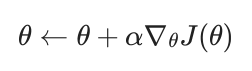
The core implementation detail is how to compute said gradient.
Another way to pose the RL objective we want to maximize is as follows:
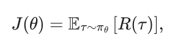
where τ = (s0, a0, s1, a1, …) is a trajectory and R(τ) = ∑t=0∞ rt is the total reward of the trajectory. Alternatively, we can write the expectation as an integral over all possible trajectories:
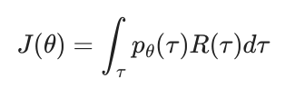
Notice that we can express the trajectory probability as follows, where πθ(at|st)p(st+1|st, at) is the transition probability to a group of next states from one state and action:
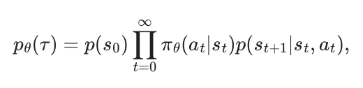
If we take the gradient of the objective (eq. 6.6) with respect to the policy parameters θ:
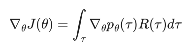
Notice that we can use the log-derivative trick in order to rewrite the gradient of the integral as an expectation:
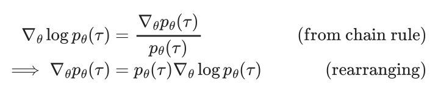
Using this log-derivative trick:
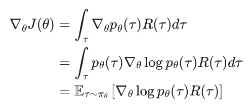
Where the final step uses the definition of an expectation under the trajectory distribution pθ(τ): for any function f, Eτ∼pθ[f(τ)] = ∫τ f(τ)pθ(τ)dτ (or a sum in the discrete case). Writing it as an expectation is useful because we can approximate it with Monte Carlo rollouts, e.g., 1B ∑i=1B f(τi) for trajectories τi ∼πθ.
Back to the derivation, expanding the log probability of the trajectory:
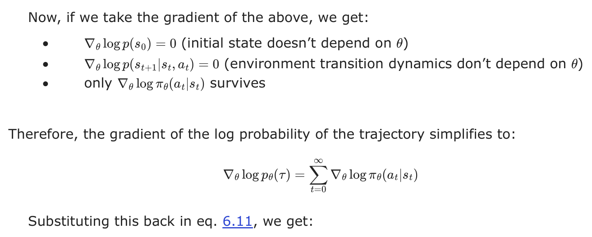
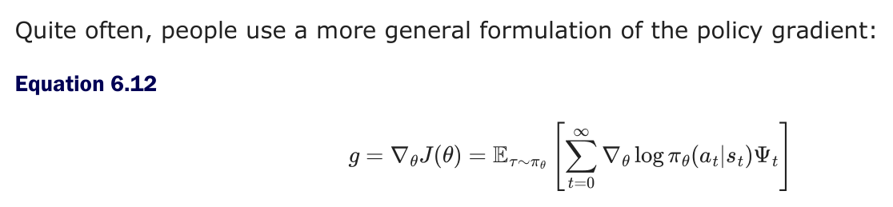
Where Ψt can be the following (where the rewards can also often be discounted by γ), a taxonomy adopted from Schulman et al. 2015 [4]:
1.R(τ) = ∑t=0∞ rt: total reward of the trajectory.
2.∑t′=t∞ rt′: reward following action at, also described as the return, G.
3.∑t′=t∞ rt′ −b(st): baselined version of previous formula.
4.Qπ(st, at): state-action value function.
5.Aπ(st, at): advantage function, which yields the lowest possible theoretical
variance if it can be computed accurately.
6.rt + Vπ(st+1) −Vπ(st): Temporal Difference (TD) residual.
The baseline is a value used to reduce variance of policy updates (more on this below).
For language models, some of these concepts do not make as much sense. For example, for a deterministic policy π the state value is Vπ(s) = Qπ(s, π(s)) (and for the optimal value function one has V∗(s) = maxa Q∗(s, a)). For a stochastic policy, the analogous identity is Vπ(s) = Ea∼π(⋅∣s)[Qπ(s, a)]. If we define s + a as the continuation a to the prompt s, then Q(s, a) = V (s + a), which gives a different advantage trick:
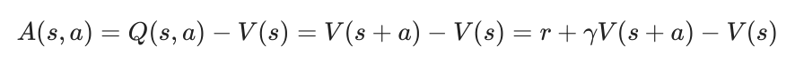
Which is a combination of the reward, the value of the prompt, and the discounted value of the entire utterance.
#6.1.1 Vanilla Policy Gradient
The vanilla policy gradient implementation optimizes the above expression for J(θ) by differentiating with respect to the policy parameters. A simple version, with respect to the overall return, is:
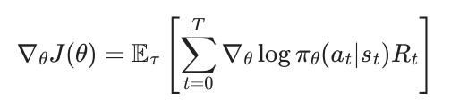
A common problem with vanilla policy gradient algorithms is the high variance in gradient updates, which can be mitigated in multiple ways. The high variance comes from the gradient updates being computed from estimating the return G from an often small set of rollouts in the environment that tend to be susceptible to noise (e.g. the stochastic nature of generating from language models with temperature > 0, where higher temperature values produce more diverse but noisier outputs). The variance across return estimates is higher in domains with sparse rewards, as more of the samples are 0 or 1, rather than closely clustered. In order to alleviate this, various techniques are used to normalize the value estimation, called baselines. Baselines accomplish this in multiple ways, effectively normalizing by the value of the state relative to the downstream action (e.g. in the case of Advantage, which is the difference between the Q value and the value). The simplest baselines are averages over the batch of rewards or a moving average. Even these baselines can de-bias the gradients so Ea∼π(a|s)[∇θ log πθ(a|s)] = 0, improving the learning signal substantially.
Many of the policy gradient algorithms discussed in this chapter build on the advantage formulation of policy gradient:
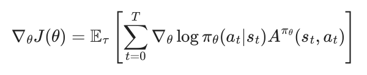
#6.1.2 REINFORCE
The algorithm REINFORCE is likely a backronym, but the components of the algorithm it represents are quite relevant for modern reinforcement learning algorithms. Defined in the seminal paper Simple statistical gradient-following algorithms for connectionist reinforcement learning [5]:
The name is an acronym for “REward Increment = Nonnegative Factor X Offset Reinforcement X Characteristic Eligibility.”
The three components of this are how to do the reward increment, a.k.a. the policy gradient step. It has three pieces to the update rule:
- Nonnegative factor: This is the learning rate (step size) that must be a positive number, e.g. α below.
- Offset Reinforcement: This is a baseline b or other normalizing factor of the reward to improve stability.
- Characteristic Eligibility: This is how the learning becomes attributed per token. It can be a general value, e per parameter, but is often log probabilities of the policy in modern equations.
Thus, the form looks quite familiar:
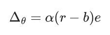
With more modern notation and the generalized return G, the REINFORCE operator appears as:
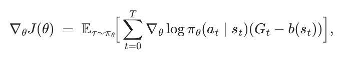
Here, the value Gt −b(st) is the advantage of the policy at the current state, so we can reformulate the policy gradient in a form that we continue later with the advantage, A:
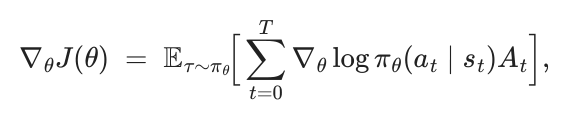
REINFORCE is a specific implementation of vanilla policy gradient that uses a Monte Carlo estimator of the gradient.
#6.1.3 REINFORCE Leave One Out (RLOO)
The core implementation detail of REINFORCE Leave One Out versus standard REINFORCE is that it takes the average reward of the other samples in the batch to compute the baseline – rather than averaging over all rewards in the batch [6], [1], [7].
Crucially, this only works when generating multiple trajectories (completions) per state (prompt), which is common practice in multiple domains of fine-tuning language models with RL.
Specifically, for the REINFORCE Leave-One-Out (RLOO) baseline, given K sampled trajectories (actions taken conditioned on a prompt) a1, … , aK, to a given prompt s we define the baseline explicitly as the following per-prompt:
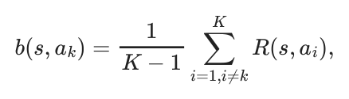
resulting in the advantage:
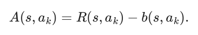
Equivalently, this can be expressed as:
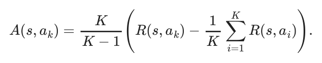
This is a simple, low-variance per-prompt advantage estimate that is closely related to the group-relative advantage used in Group Relative Policy Optimization, GRPO (discussed shortly, after Proximal Policy Optimization, PPO). In practice, GRPO-style training mainly differs in how it applies the KL regularizer (as an explicit loss term vs. folded into the reward) and whether it uses PPO-style ratio clipping. To be specific, the canonical GRPO implementation applies the KL penalty at the loss level, where the derivation for RLOO or traditional policy-gradients apply the KL penalty to the reward itself. With the transition from RLHF to reasoning and reinforcement learning with verifiable rewards (RLVR), the prevalence of KL penalties has decreased overall, with many reasoning adaptations of RLHF code turning them off entirely. Still, the advantage from RLOO could be combined with the clipping of PPO, showing how similar many of these algorithms are.
RLOO and other algorithms that do not use a value network – an additional model copy (a critic) that predicts a scalar value V (st) per token – assign the same sequence-level advantage (or reward) to every token when computing the loss. Algorithms that use a learned value network, such as PPO, assign a different value to every token individually, discounting from the final reward achieved at the EOS token. With a KL distance penalty, RLOO aggregates the per-token KL over the completion and folds that scalar into the sequence reward, so the resulting advantage is broadcast to all tokens. PPO subtracts a per-token KL from the per-token reward before computing At, giving token-level credit assignment. GRPO typically retains a sequence-level advantage but adds a separate per- token term to the loss, rather than subtracting it from the reward. These details and trade- offs are discussed later in the chapter.
#6.1.4 Proximal Policy Optimization (PPO)
Proximal Policy Optimization (PPO) [8] is one of the foundational algorithms behind Deep RL’s successes (such as OpenAI’s Five, which mastered DOTA 2 [9] and large amounts of research). The objective that PPO maximizes, with respect to the advantages and the policy probabilities, is as follows:
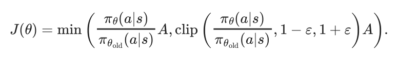
Here, πθ(a|s) is the current policy being optimized and πθold(a|s) is the policy that was used to collect the training data (i.e., the policy from the previous iteration). The ratio between these two policies emerges from importance sampling, which allows us to reuse data collected under an old policy to estimate gradients for a new policy.
Recall from the advantage formulation of the policy gradient (eq. 6.15) that we have:
This expectation is taken over trajectories sampled from πθ, but in practice we want to take multiple gradient steps on a batch of data that was collected from a fixed policy π. To correct for this distribution mismatch, we multiply by the importance weight πθ(a|sθ)oldπθold(a|s), which reweights samples to account for how much more or less likely they are under the current policy versus the data-collection policy. Without constraints, optimizing this importance-weighted objective can lead to destructively large policy updates when the ratio diverges far from 1. PPO addresses this by clipping the ratio to the range [1 −ε, 1 + ε], ensuring that the policy cannot change too drastically in a single update.
For completeness, PPO is typically written as an expected clipped surrogate objective over timesteps:
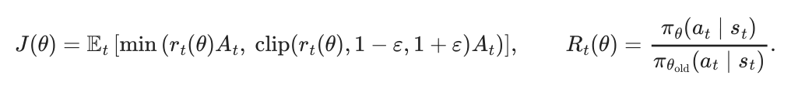
The objective is often converted into a loss function by simply adding a negative sign, which makes the optimizer seek to make it as negative as possible.
For language models, the objective (or loss) is computed per token, which intuitively can be grounded in how one would compute the probability of the entire sequence of autoregressive predictions – by a product of probabilities. From there, the common implementation is with log-probabilities that make the computation simpler to perform in modern language modeling frameworks.
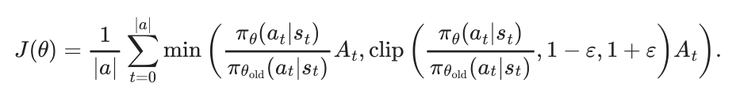
This is the per-token version of PPO, which also applies to other policy-gradient methods, but is explored further later in the implementation section of this chapter. Here, the term for averaging by the number of tokens in the action, 1|a|, comes from common implementation practices, but is not in a formal derivation of the loss (shown in [10]).
Here we will explain the different cases this loss function triggers given various advantages and policy ratios. At an implementation level, the inner computations for PPO involve two main terms: 1) a standard policy gradient with a learned advantage and 2) a clipped policy gradient based on a maximum step size.
To understand how different situations emerge, we can define the policy ratio as:
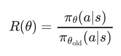
The policy ratio is a centerpiece of PPO and related algorithms. It emerges from computing the gradient of a policy and controls the parameter updates in a very intuitive way. For any batch of data, the policy ratio starts at 1 for the first gradient step for that batch, since πθ is the same as πθold at this point. Then, in the next gradient step, the policy ratio will be above one if that gradient step increased the likelihood of certain tokens with an associated positive advantage, or less than one for the other case. A common practice is to take 1-4 gradient steps per batch with policy gradient algorithms before updating πθold.
#UNDERSTANDING THE PPO OBJECTIVE
Overall, the PPO objective can be visualized by two lines of a plot of objective versus policy ratio, which is shown in fig. 6.2. The PPO objective is maximized by changing the probability of the sampled actions. Numerically, the objective controls for both positive and negative advantage cases by clever use of the minimum operation, making it so the update is at most pushed by an epsilon distance away from a policy ratio of 1.
Within the trust region, PPO operates the same as other policy gradient algorithms. This is by design! The trust region is a concept used to cap the maximum step size of PPO and its peer algorithms for stability of updates. The core of the PPO algorithm, the clip and min/max functions, is to define this region. The objective becomes flat outside of it.
The idea of a “trust region” comes from the numerical optimization literature [11], but was popularized within Deep RL from the algorithm Trust Region Policy Optimization (TRPO), which is accepted as the predecessor to PPO [12]. The trust region is the area where the full policy-gradient steps are applied, as the updates are not “clipped” by the max/min operations of the PPO objective.
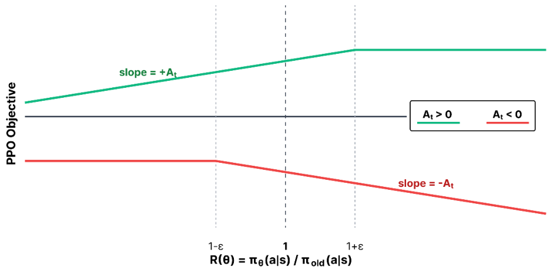
The policy ratio and advantage together can occur in a few different configurations. We will split the cases into two groups: positive and negative advantage.
Positive Advantage (At > 0)
This means that the action taken was beneficial according to the value function, and we want to increase the likelihood of taking that action in the future. Now, let’s look at different cases for the policy ratio R(θ):
- R(θ) < 1 −ε: Interpretation: Action is less likely with the new policy than the old policy Unclipped Term: R(θ)At Clipped Term: (1 −ε)At Objective: R(θ)At Gradient: ∇θR(θ)At ≠0 What happens: Normal policy-gradient update - increase likelihood of action
- 1 −ε ≤R(θ) ≤1 + ε: Interpretation: Action is almost equally likely with the new policy as the old policy Unclipped Term: R(θ)At Clipped Term: R(θ)At Objective: R(θ)At Gradient: ∇θR(θ)At ≠0 What happens: Normal policy-gradient update - increase likelihood of action
- 1 + ε < R(θ): Interpretation: Action is more likely with the new policy than the old policy Unclipped Term: R(θ)At Clipped Term: (1 + ε)At Objective: (1 + ε)At Gradient: ∇θ(1 + ε)At = 0 What happens: NO UPDATE - action is already more likely under the new policy
To summarize, when the advantage is positive (At > 0), we want to boost the probability of the action. Therefore:
- We perform gradient steps only in the case when πnew(a) ≤(1 + ε)πold(a). Intuitively, we want to boost the probability of the action, since the advantage was positive, but not boost it so much that we have made it substantially more likely.
Crucially, when πnew(a) > (1 + ε)πold(a), then we don’t perform any update,
and the gradient of the clipped objective is 0. Intuitively, the action is
already more expressed with the new policy, so we don’t want to over-
Negative Advantage (At < 0)
This means that the action taken was detrimental according to the value function, and we want to decrease the likelihood of taking that action in the future. Now, let’s look at different cases for the policy ratio R(θ):
- R(θ) < 1 −ε: Interpretation: Action is less likely with the new policy than the old policy Unclipped Term: R(θ)At Clipped Term: (1 −ε)At Objective: (1 −ε)At Gradient: ∇θ(1 −ε)At = 0 What happens: NO UPDATE - action is already less likely under the new policy
- 1 −ε ≤R(θ) ≤1 + ε: Interpretation: Action is almost equally likely with the new policy as the old policy Unclipped Term: R(θ)At Clipped Term: R(θ)At Objective: R(θ)At Gradient: ∇θR(θ)At ≠0 What happens: Normal policy-gradient update - decrease likelihood of action
- 1 + ε < R(θ): Interpretation: Action is more likely with the new policy than the old policy Unclipped Term: R(θ)At Clipped Term: (1 + ε)At Objective: R(θ)At Gradient: ∇θR(θ)At ≠0 What happens: Normal policy-gradient update - decrease likelihood of action
To summarize, when the advantage is negative (At < 0), we want to decrease the probability of the action. Therefore:
- We perform gradient steps only in the case when πnew(a) ≥(1 −ε)πold(a). Intuitively, we want to decrease the probability of the action, since the advantage was negative, and we do so proportional to the advantage.
Crucially, when πnew(a) < (1 −ε)πold(a), then we don’t perform any update,
and the gradient of the clipped objective is 0. Intuitively, the action is
already less likely under the new policy, so we don’t want to over-
It is crucial to remember that PPO within the trust region is roughly the same as standard forms of policy gradient.
#VALUE FUNCTIONS AND PPO
The value function within PPO is an additional copy of the model that is used to predict the value per token. The value of a token (or state) in traditional RL is predicting the future return from that moment, often with discounting. This value in PPO is used as a learned baseline, representing an evolution of the simple Monte Carlo version used with REINFORCE (which doesn’t need the learned value network). This highlights how PPO is an evolution of REINFORCE and vanilla policy-gradient in multiple forms, across the optimization form, baseline, etc. In practice, with PPO and other algorithms used for language models, this is predicting the return of each token after the deduction of KL penalties (the per-token loss includes the KL from the reward traditionally, as discussed).
There are a few different methods (or targets) used to learn the value functions. Generalized Advantage Estimation (GAE) is considered the state-of-the-art and canonical implementation in modern systems, but it carries more complexity by computing the value prediction error over multiple steps – see the later section on GAE in this chapter. A value function can also be learned with Monte Carlo estimates from the rollouts used to update the policy. PPO has two losses – one to learn the value function and another to use that value function to update the policy.
A simple example implementation of a value network loss is shown below.
# Basic PPO critic targets & loss (no GAE)
#
# B: Batch Size
# L: Completion Length
# Inputs:
# rewards: (B, L) post-KL per-token rewards; EOS row includes outcome
# done_mask: (B, L) 1.0 at terminal token (EOS or truncation if penalized),
else 0.0
# completion_mask: (B, L) 1.0 on response tokens to supervise (ignore the
prompt)
# values: (B, L) current critic predictions V_theta(s_t)
# because a value network is a running update
# old_values: (B, L) critic predictions at rollout time V_{theta_old}(s_t)
# gamma: discount factor, float (often 1.0 for LM RLHF)
# epsilon_v: float value clip range (e.g., 0.2), similar to PPO Loss Update
itself, optional
#
# Returns:
# value_loss: scalar; advantages: (B, L) detached (for policy loss)
B, L = rewards.shape
#1
returns = torch.zeros_like(rewards)
running = torch.zeros(B, device=rewards.device, dtype=rewards.dtype)
for t in reversed(range(L)):
running = rewards[:, t] + gamma * (1.0 - done_mask[:, t]) * running
returns[:, t] = running
targets = returns # y_t = G_t (post-KL)
#2
v_pred = values
v_old = old_values
v_clip = torch.clamp(v_pred, v_old - epsilon_v, v_old + epsilon_v)
vf_unclipped = 0.5 * (v_pred - targets) ** 2
vf_clipped = 0.5 * (v_clip - targets) ** 2
vf_loss_tok = torch.max(vf_unclipped, vf_clipped)
#3
denom = completion_mask.sum(dim=1).clamp_min(1)
value_loss = ((vf_loss_tok * completion_mask).sum(dim=1) / denom).mean()
#4
advantages = (targets - v_pred).detach()
# The value loss is applied later, often with the PG loss, e.g.
# total_loss = policy_loss + vf_coef * value_loss#6.1.5 Group Relative Policy Optimization (GRPO)
Group Relative Policy Optimization (GRPO) is introduced in DeepSeekMath [13], and used in other DeepSeek works, e.g. DeepSeek-V3 [14] and DeepSeek-R1 [15]. GRPO can be viewed as a PPO-inspired algorithm with a very similar surrogate loss, but it avoids learning a value function with another copy of the original policy language model (or another checkpoint for initialization). This brings two posited benefits:
- Avoiding the challenge of learning a value function from a LM backbone, where research hasn’t established best practices.
- Saves memory by not needing to keep the extra set of model weights in memory (going from needing the current policy, the reference policy, and a value function, to just the first two copies).
GRPO does this by simplifying the value estimation and assigning the same value to every token in the episode (i.e. in the completion to a prompt, each token gets assigned the same value rather than discounted rewards in a standard value function) by estimating the advantage or baseline. The estimate is done by collecting multiple completions (ai) and rewards (r i), i.e. a Monte Carlo estimate, from the same initial state / prompt (s ).
To state this formally, the GRPO objective is very similar to the PPO objective above. For GRPO, the objective (or loss) is accumulated over a group of completions {a1, a2, . . . , aG} to a given prompt s. Here, we show the GRPO objective:
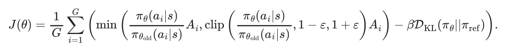
Note that relative to PPO, the standard implementation of GRPO includes the KL distance in the loss. As above, we can expand this into a per-token computation:
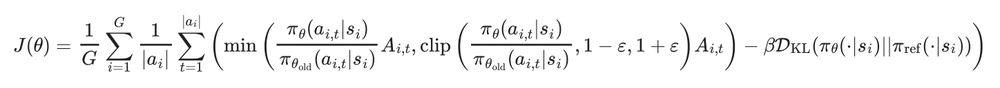
With the advantage computation for the completion index i:
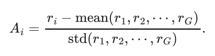
Intuitively, the GRPO update is comparing multiple answers to a single question within a batch. The model learns to become more like the answers marked as correct and less like the others. This is a very simple way to compute the advantage, which is the measure of how much better a specific action is than the average at a given state. Relative to PPO, REINFORCE, and broadly RLHF performed with a reward model rating (relative to output reward), GRPO is often run with a far higher number of samples per prompt because the advantage is entirely about the relative value of a completion to its peers from that prompt. Here, the current policy generates multiple responses to a given prompt, and the group- wise GRPO advantage estimate is given valuable context. PPO and vanilla policy-gradient algorithms were designed to accurately estimate the reward of every completion (in fact, more completions can do little to improve the value estimate in some cases). GRPO and its variants are particularly well-suited to modern language model tools, where multiple completions to a given prompt is very natural (especially when compared to, e.g., multiple actions from a set environment state in a robotic task).
The advantage computation for GRPO has trade-offs in its biases. The normalization by standard deviation is rewarding questions in a batch that have a low variation in answer correctness. For questions with either nearly all correct or all incorrect answers, the standard deviation will be lower and the advantage will be higher. [10] proposes removing the standard deviation term given this bias, but this comes at the cost of down-weighing questions that were all incorrect with a few correct answers, which could be seen as valuable learning signal for the model. Those high-variance prompts can be exactly the hardest cases, where only a few sampled completions find the correct answer and provide a strong training signal.
eq. 6.28 is the implementation of GRPO when working with outcome supervision (either a standard reward model or a single verifiable reward) and a different implementation is needed with process supervision. In this case, GRPO computes the advantage as the sum of the normalized rewards for the following reasoning steps.
Finally, GRPO’s advantage estimation can also be applied without the PPO clipping to more vanilla versions of policy gradient (e.g. REINFORCE), but it is not the canonical form. As an example of how these algorithms are intertwined, we can show that the advantage estimation in a variant of GRPO, Dr. GRPO (GRPO Done Right) [10], is equivalent to the RLOO estimation (which uses the average reward of other samples as its baseline) up to a constant scaling factor (which normally does not matter due to implementation details to normalize the advantage). Dr. GRPO removes the standard deviation normalization term from eq. 6.28 – note that this also scales the advantage up, which is equivalent to increasing the GRPO learning rate on samples with a variance in answer scores. This addresses a bias towards questions with low reward variance – i.e. almost all the answers are right or wrong – but comes at a potential cost where problems where just one sample gets the answer right are important to learn from. The Dr. GRPO advantage for completion i within a group of size G is defined as:
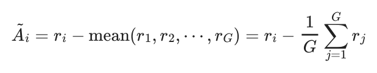
Here, in the same notation, we can recall the RLOO advantage estimation as:
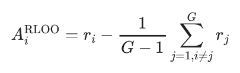
Thus, if we multiply the Dr. GRPO advantage definition by GG−1 we can see a scaled equivalence:
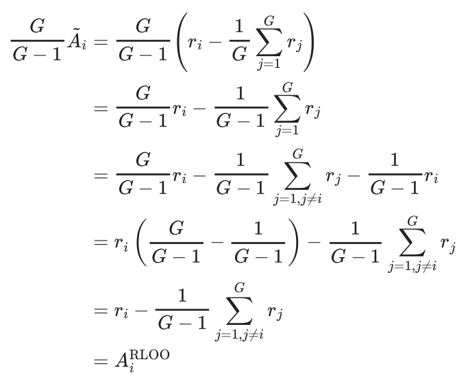
#6.1.6 Group Sequence Policy Optimization (GSPO)
When taking multiple gradient steps on a batch of data collected from a previous policy, importance sampling is required to correct for the distribution mismatch between the data-collection policy and the current policy being optimized. The standard importance sampling identity allows us to estimate expectations under one distribution using samples from another:
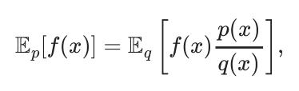
where p is the target distribution, q is the sampling distribution, and p(x)q(x) is the importance weight. In policy gradient methods, p = πθ is the current policy we want to optimize and q = πθold is the policy that generated the training data. This allows us to reweight samples collected under πθold to estimate gradients for πθ, enabling multiple gradient steps per batch of rollouts.
This distribution mismatch arises in two common scenarios: (1) taking multiple gradient steps on a single batch, where πθ drifts from πθold after each update, and (2) in asynchronous training systems where the inference backend (e.g., vLLM) and training backend (e.g., FSDP) may have different model weights due to synchronization delays (see the Asynchronicity section later in this chapter, which emerged particularly with the focus on RL for verifiable rewards, but is also used in RLHF setups).
PPO and GRPO apply importance sampling at the token level and stabilize learning by clipping the surrogate objective. However, this approach has a subtle failure mode: when a token’s importance ratio moves outside the clipping range [1 −ε, 1 + ε], that token receives zero gradient. For rare but important tokens—such as key reasoning steps that the model initially assigns low probability—this “token dropping” can prevent the model from learning to produce them more reliably.
Group Sequence Policy Optimization (GSPO) [16] extends GRPO by computing importance ratios at the sequence level rather than the token level. The practical motivation for this algorithm, and it’s peer modifying how importance sampling is computed for policy graident algorithsm, CISPO, that we will discuss later, is that the per-token importance sampling ratio is often numerically unstable. The conceptual motivation is that when rewards are assigned at the sequence level (as in most RLHF and RLVR setups), the importance sampling correction should match that granularity.
Token-level ratios can behave erratically for long sequences and/or large, sparse models (e.g. modern mixture of experts, MoE, models): a single token with a large ratio can dominate the plicy update, or many tokens may get clipped independently within a response, fragmenting the learning signal across a single response. GSPO addresses this by computing a single importance weight per response.
Recall that the probability of a full response factorizes autoregressively:
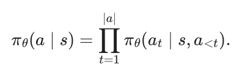
Note that for simplicity, we often shorten the conditional policy, πθ(at ∣s, a<t), as πθ(at ∣s), which implicitly contains the previous actions (tokens) in a completion. GSPO defines a length-normalized sequence-level importance ratio using the geometric mean (to avoid numerical issues with long sequences):
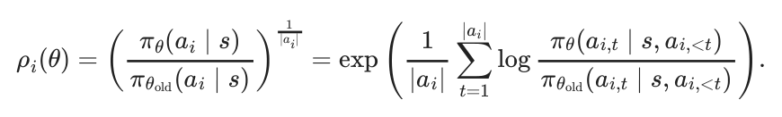
The GSPO objective mirrors GRPO but uses this sequence-level ratio:
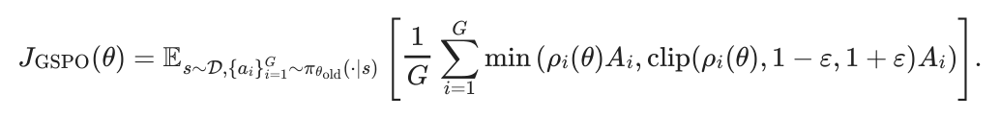
Because the ratio is length-normalized, the clipping range ε operates on a per-token average scale, making the effective constraint comparable across responses of different lengths. In implementation, the sequence-level weight ρi is applied uniformly to all tokens in response ai, which simplifies gradient computation while maintaining the sequence-level IS correction.
The advantage computation remains the same as GRPO (eq. 6.28), using the group-relative mean and standard deviation normalization, which can be modified as done in other derivative studies of GRPO. GSPO can be summarized as “GRPO with sequence-level importance ratios”—the IS correction granularity is matched to the reward granularity.
#6.1.7 Clipped Importance Sampling Policy Optimization (CISPO)
Clipped Importance Sampling Policy Optimization (CISPO) [17] takes a different approach: rather than clipping the surrogate objective, CISPO clips the importance weights themselves while preserving gradients for all tokens. The objective uses a stop-gradient on the clipped importance weight, returning to a REINFORCE-style formulation instead of the PPO-style, two-sided clipping:
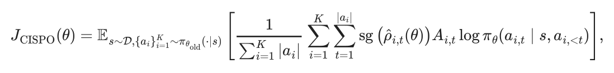
where sg(⋅) denotes stop-gradient (the weight is used but not differentiated through), and the clipped importance ratio is:
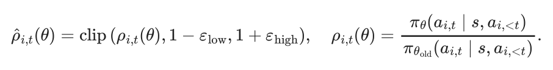
The key difference from PPO/GRPO is subtle but important: clipping the weight (not the objective) means every token still receives a gradient signal proportional to its advantage— the weight just bounds how much that signal is amplified or suppressed by the importance ratio. This is a bias-variance tradeoff: clipping weights introduces bias but controls variance and, critically, avoids dropping token gradients entirely.
Both CISPO and GSPO were developed by organizations pushing the limits of applying RL on large-scale MoE models, which are known for their numerical issues. The papers highlight how the per-token importance sampling ratios are instable and can add substantial variance to the gradients, mitigating learning. This can make these algorithms particularly impactful on large-scale models, but less studied and beneficial within smaller, academic experiments.
CISPO also allows asymmetric clipping bounds (εlow ≠εhigh), similar to DAPO’s “clip-higher” modification discussed later in this chapter, which can encourage exploration by allowing larger updates for tokens the model wants to upweight. Related work includes Tapered Off-Policy REINFORCE (TOPR) [18], which also clips IS weights directly (like CISPO) rather than clipping within the objective (like PPO/GRPO), but operates at the sequence level (like GSPO) and uses asymmetric clipping based on reward sign—applying no IS correction for positive rewards while clipping ratios to [0, 1] for negative rewards— enabling stable off-policy learning.
#6.1.8 Comparing Algorithms
Here’s a summary of some of the discussed material (and foreshadowing to coming material on Direct Preference Optimization) when applied to RLHF. Here, on- or off-policy indicates the derivation (where most are applied slightly off-policy in practice). A reference policy here indicates if it is required for the optimization itself, rather than for a KL penalty.
| Method | Type | Reward Model | Function Value | Reference Policy | Core Loss L(θ) |
|---|---|---|---|---|---|
| REINFORCE | On- | Yes | No | No | −1∑Tlog πθ(at ∣st)(Gt −b(st)) |
| policy | T t=1 | ||||
| RLOO | On- | Yes | No | No | −1∑K∑log πθ(ai,t ∣si,t)(Ri −1∑Rj) |
| policy | K i=1 t K−1 j≠i | ||||
| CISPO | policy On- | Yes | No | Yes | −∑i,t sg(ρ^i,t)Ai,t log πθ(ai,t ∣si,t) |
| PPO | On- | Yes | Yes | Yes | −1∑Tmin(ρtAt, clip(ρt, 1 −ε, 1 + ε)At) |
| policy | T t=1 | ||||
| GRPO | On- | Yes | No | Yes | −1∑Gmin(ρiAi, clip(ρi, 1 −ε, 1 + ε)Ai) |
| policy | G i=1 | ||||
| GSPO | On- | Yes | No | Yes | −1∑Gmin(ρiAi, clip(ρi, 1 −ε, 1 + ε)Ai) |
| policy | G i=1 | ||||
| DPO | policy Off- | No | No | Yes | −E(x,yw,yl)[log σ(β[Δ log πθ(x) −Δ log πref(x)])] |
#6.2 Implementation
Compared to the original Deep RL literature where many of these algorithms were developed, implementing RL for optimizing language models or other large AI models requires many small implementation details. In this section, we highlight some key factors that differentiate the implementations of popular algorithms.
There are many other small details that go into this training. For example, when doing RLHF with language models a crucial step is generating text that will then be rated by the reward model. Under normal circumstances, the model should generate an end-of-sequence (EOS) token indicating it finished generating, but a common practice is to put a hard cap on generation length to efficiently utilize infrastructure. A failure mode of RLHF is that the model is regularly truncated in its answers, driving the ratings from the reward model out-of-distribution and to unpredictable scores. The solution to this is to only run reward model scoring on the eos\_token, and to otherwise assign a penalty to the model for generating too long.
The popular open-source tools for RLHF have a large variance in implementation details across the algorithms (see table 10 in [19]). Some decisions not covered here include:
- Value network initialization: The internal learned value network used by PPO and other similar algorithms can be started from a different model of the same architecture or randomly selected weights. This can have a large impact on performance. The standard established in InstructGPT [20] (and re-used in Tülu 3 for its work on RLVR [21]) is to initialize the value network from the reward model used during RLHF. Others have used the previous checkpoint to RLHF training (normally an SFT model) with a value head appened randomly initialized, or fully re-initialized language models (less common as it will take longer for RLHF to converge, but possible).
- Reward normalization, reward whitening, and/or advantage whitening: Normalization bounds all the values from the RM (or environment) to be between 0 and 1, which can help with learning stability. Whitening goes further by transforming rewards or advantage estimates to have zero mean and unit variance, providing an even stronger boost to stability.
- Different KL estimators: With complex language models, precisely computing the KL divergence between models can be complex, so multiple approximations are used to substitute for an exact calculation [22].
- KL controllers: Original implementations of PPO and related algorithms had dynamic controllers that targeted specific KLs and changed the penalty based on recent measurements. Most modern RLHF implementations use static KL penalties, but this can also vary.
For more details on implementation details for RLHF, see [23]. For further information on the algorithms, see [24].
#6.2.1 Policy Gradient Basics
A simple implementation of policy gradient, using advantages to estimate the gradient to prepare for advanced algorithms such as PPO and GRPO follows:
pg_loss = -advantages * ratioRatio here is the (per-token) probability ratio (often computed from a log-probability difference) of the new policy model probabilities relative to the reference model.
In order to understand this equation, it is good to understand different cases that can fall within a batch of updates. Remember that we want the loss to decrease as the model gets better at the task.
Case 1: Positive advantage, so the action was better than the expected value of the state. We want to reinforce this. In this case, the model will make this more likely with the negative sign. To do so, it’ll increase the logratio. A positive logratio, or sum of log probabilities of the tokens, means that the model is more likely to generate those tokens.
Case 2: Negative advantage, so the action was worse than the expected value of the state. This follows very similarly. Here, the loss will be positive if the new model was more likely, so the model will try to make it so the policy parameters make this completion less likely.
Case 3: Zero advantage, so no update is needed. The loss is zero, don’t change the policy model.
#6.2.2 Loss Aggregation
The question when implementing any policy gradient algorithm with language models is: How do you aggregate per-token losses into a final scalar loss? Given per-token losses ℓi,t for sample i at token t, with completion lengths |ai| and batch size B, there are three main strategies:
Strategy 1: Per-sequence normalization (standard GRPO; also used in some PPO implementations)
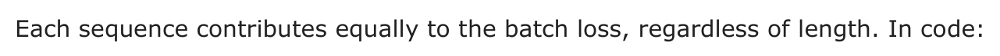
sequence_loss = ((per_token_loss * completion_mask).sum(dim=1) / \
completion_mask.sum(dim=1)).mean()Strategy 2: Per-token normalization (DAPO [25])
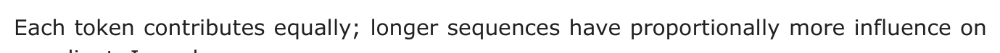
the gradient. In code:
token_loss = ((per_token_loss * completion_mask).sum() / \
completion_mask.sum())Strategy 3: Fixed-length normalization (Dr. GRPO [10])
Normalizes by max sequence length Lmax, equalizing the per-token scale across sequences while still letting longer sequences contribute more total gradient because they contain more active tokens.
Note that completion\_mask in the code above is a matrix of 1s and 0s, where the prompt tokens are masked out (0s) because we don’t want the model to learn from predicting prompt tokens.
#WHY DOES THIS MATTER?
Intuitively, per-sequence normalization (Strategy 1) seems best since we care about outcomes, not individual tokens. However, this introduces subtle biases based on sequence length, which can cause the model to overthink of down-weight strategies that naturally need to use more tokens, depending on the direction of the bias. Consider two sequences of different lengths with per-token losses:
seq_1_losses = [1, 1, 1, 1, 10] # 5 tokens, mean = 2.8
seq_2_losses = [1, 1, 1, 1, 1, 1, 1, 1, 1, 10] # 10 tokens, mean = 1.9With Strategy 1 (per-sequence): The batch loss is (2.8 + 1.9)/2 = 2.35, and crucially, each token in the short sequence receives a larger gradient than tokens in the long sequence.
With Strategy 2 (per-token): The batch loss is (14 + 19)/15 = 2.2, and all tokens receive equal gradient magnitude.
With Strategy 3 (fixed-length with Lmax = 10): The short sequence contributes 1.4 and the long sequence contributes 1.9, balancing per-token gradients while still weighting by sequence.
For a more complete example showing how these strategies affect gradients, see the script below.
from typing import Optional
import torch
def masked_mean(values: torch.Tensor, mask: torch.Tensor, axis: Optional[int] =
None) -> torch.Tensor:
"""Compute mean of tensor with masked values."""
if axis is not None:
return (values * mask).sum(axis=axis) / mask.sum(axis=axis)
else:
return (values * mask).sum() / mask.sum()
def masked_sum(
values: torch.Tensor,
mask: torch.Tensor,
axis: Optional[int] = None,
constant_normalizer: float = 1.0,
) -> torch.Tensor:
"""Compute sum of tensor with masked values. Use a constant to normalize."""
if axis is not None:
return (values * mask).sum(axis=axis) / constant_normalizer
else:
return (values * mask).sum() / constant_normalizer
ratio = torch.tensor([
[1., 1, 1, 1, 1, 1, 1,],
[1, 1, 1, 1, 1, 1, 1,],
], requires_grad=True)
advs = torch.tensor([
[2, 2, 2, 2, 2, 2, 2,],
[2, 2, 2, 2, 2, 2, 2,],
])
masks = torch.tensor([
# generation 1: 4 tokens
[1, 1, 1, 1, 0, 0, 0,],
# generation 2: 7 tokens
[1, 1, 1, 1, 1, 1, 1,],
])
max_gen_len = 7
masked_mean_result = masked_mean(ratio * advs, masks, axis=1)
masked_mean_token_level = masked_mean(ratio, masks, axis=None)
masked_sum_result = masked_sum(ratio * advs, masks, axis=1,
constant_normalizer=max_gen_len)
print("masked_mean", masked_mean_result)
print("masked_sum", masked_sum_result)
print("masked_mean_token_level", masked_mean_token_level)
# masked_mean tensor([2., 2.], grad_fn=<DivBackward0>)
# masked_sum tensor([1.1429, 2.0000], grad_fn=<DivBackward0>)
# masked_mean_token_level tensor(1., grad_fn=<DivBackward0>)
masked_mean_result.mean().backward()
print("ratio.grad", ratio.grad)
ratio.grad.zero_()
# ratio.grad tensor([[0.2500, 0.2500, 0.2500, 0.2500, 0.0000, 0.0000, 0.0000],
# [0.1429, 0.1429, 0.1429, 0.1429, 0.1429, 0.1429, 0.1429]])
masked_sum_result.mean().backward()
print("ratio.grad", ratio.grad)
ratio.grad.zero_()
# ratio.grad tensor([[0.1429, 0.1429, 0.1429, 0.1429, 0.0000, 0.0000, 0.0000],
# [0.1429, 0.1429, 0.1429, 0.1429, 0.1429, 0.1429, 0.1429]])
masked_mean_token_level.mean().backward()
print("ratio.grad", ratio.grad)
# ratio.grad tensor([[0.0909, 0.0909, 0.0909, 0.0909, 0.0000, 0.0000, 0.0000],
# [0.0909, 0.0909, 0.0909, 0.0909, 0.0909, 0.0909, 0.0909]])The output shows that with Strategy 1 (masked\_mean), the short sequence has larger per- token gradients (0.25) than the long sequence (0.14). Strategies 2 and 3 equalize the per- token gradients across sequences. Note that these results can vary substantially if gradient accumulation is used, where the gradients are summed across multiple minibatches before taking a backward step—in this case, the balance between shorter and longer sequences can flip.
In practice, the best strategy depends on the specific training setup. Often in RLHF the method with the best numerical stability or the least variance in loss is preferred.
#RELATED: MDP VS BANDIT FRAMING
The choice of loss aggregation connects to a deeper distinction in how we frame the RL problem. The MDP (token-level) view treats each token at as an action with state st being the running prefix. In practice, this is the framing used when we compute token-level advantages with a learned value function V (st) (e.g., GAE [4]) and apply KL penalties per token. PPO with a learned value network is the canonical example [8].
In contrast, the bandit (sequence-level) view treats the whole completion as a single action with one scalar reward R. In code, this means computing a sequence-level advantage Aseq and broadcasting it to all tokens. RLOO and GRPO-style advantages are often used in this bandit-style setting [7] [1] [13]. Direct alignment methods like DPO and A-LoL also define sequence-level objectives, although they are not policy-gradient estimators [26].
Note that many GRPO implementations use a bandit-style advantage and add a separate per-token KL term in the loss, while many PPO/RLOO implementations fold KL into the reward before computing advantages; both conventions exist in practice.
An example comparison highlighting the two approaches is below.
Bandit-style (sequence-level): One scalar reward per sequence; advantage broadcast to all tokens.
reward = torch.tensor([3.0, 1.0]) # (B,) e.g., reward model scores
baseline = reward.mean() # simple baseline (RLOO uses leave-one-
out)
advantage_seq = reward - baseline # (B,)
advantages = advantage_seq[:, None].expand(-1, seq_len) # (B, L)
# tensor([[ 1., 1., 1., 1.], <- same advantage for all tokens
# [-1., -1., -1., -1.]])MDP-style (token-level): Per-token rewards plus a learned value function; each token gets its own advantage.
advantages = gae(per_token_rewards, values, done_mask, gamma=1.0, lam=0.95)
# tensor([[ 0.2, 0.5, 0.8, 1.5], <- varies by position
# [-0.3, -0.5, -0.8, -1.4]])#6.2.3 Asynchronicity
The default implementation for policy-gradient algorithms is what is called on-policy execution, where the actions (generations) taken by the agent (language model) are scored before updating the model. The theoretical derivations of policy-gradient rely on all actions being exactly on-policy where the model is always up to date with the results from the latest trials/roll-outs. In practice, maintaining exact on-policy execution substantially slows training [27]—and perfect synchronization is technically impossible regardless. Therefore, all of the recent empirical results with language models tend to be slightly outside of the theoretical proofs. What happens in practice is designing the algorithms and systems for what actually works.
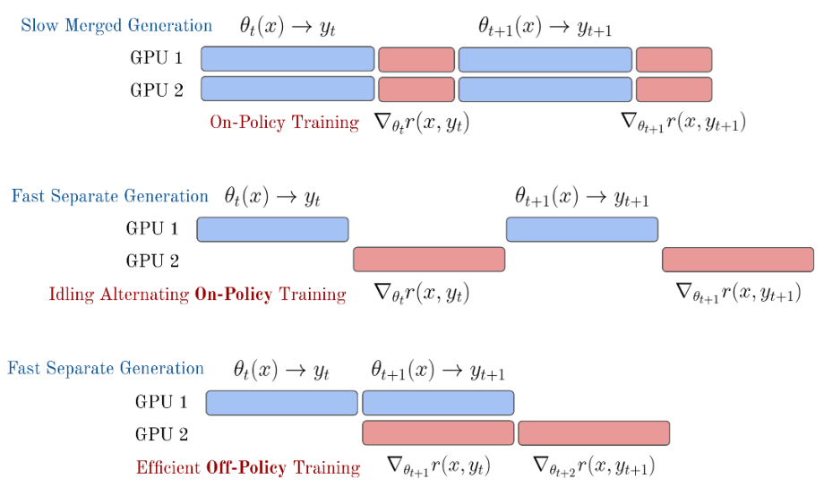
The common solution used is to constantly run inference and training on separate GPU nodes with software designed to efficiently run both, as shown in the bottom of fig. 6.3. Common practice in popular open-source RL tools for language models is to use a distributed process management library such as Ray to hand information off between the policy-gradient learning loop and the inference loop using an efficient inference engine, e.g., VLLM. In these setups, the GPUs dedicated to taking the RL steps are called the “leaners” and the GPUs dedicated to sampling from the language model are called the “actors” The primary challenges faced when making training more asynchronous are keeping training stable and maintaining learning signal.
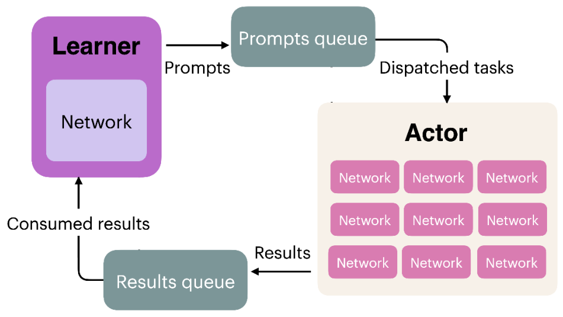
These systems are designed and implemented with the presumption that nearly on-policy data is good enough for stable learning. Here, the generation and update phases can easily be synced to avoid idle compute on either piece of the training system, which would be passing model weights from the leaners to the actors in fig. 6.4. With reasoning models, the extremely long inference characteristics of problems requiring 10K to 100K+ tokens per answer makes the generation of roll-outs a far stronger bottleneck. A common problem when training reasoning models on more synchronous RL infrastructure is that an answer to one prompt in the batch can take substantially more time to generate (either through more tokens or more tool calls), resulting in the majority of the allocated compute being idle until it completes. A second solution to this length mismatch issue, called sequence-level packing, is to stack shorter samples within a batch with clever masking to enable continued roll-outs from the model and better distribute length normalization across samples within a batch. The full complexity of distributed RL infrastructure is out of scope for this book, as it can cause many other subtle issues that slow down training or cause instability.
Following the emergence of these reasoning models, further interest has been taken to make the training and inference loops fully off-policy, where training batches for the policy gradient updates are filled with the most recently completed roll-outs across multiple instances generating answers [28] [29]. Fully asynchronous training would also enable scaling RL training runs across multiple datacenters more easily due to the option of increasing the time between weight syncs between the learner node (taking policy gradient steps) and the actor (trying to solve problems) [30].
Related methods are exploring fully off-policy policy gradient algorithms [31].
#6.2.4 Proximal Policy Optimization
There are many, many implementations of PPO available. The core loss computation is shown below. Crucial to stable performance is also the value computation, where multiple options exist (including multiple options for the value model loss).
Note that the reference policy (or old logprobs) here are from the time the generations were sampled and not necessarily the reference policy. The reference policy is only used for the KL distance constraint/penalty.
# B: Batch Size, L: Sequence Length, G: Num of Generations
#1
rewards = rewards - self.beta * per_token_kl # Shape: (B*G, L)
values = value_net(completions) # Shape: (B*G, L)
#2
advantages = rewards - values.detach() # Shape: (B*G, L)
advantages = (advantages - advantages.mean()) / (advantages.std() + 1e-8)
#3
ratio = torch.exp(new_per_token_logps - per_token_logps) # Shape: (B*G, L)
eps = self.cliprange # e.g. 0.2
pg_losses1 = -advantages * ratio # Shape: (B*G, L)
pg_losses2 = -advantages * torch.clamp(ratio, 1.0 - eps, 1.0 + eps) # Shape:
(B*G, L)
pg_loss_max = torch.max(pg_losses1, pg_losses2) # Shape: (B*G, L)
#4
vf_loss = 0.5 * ((rewards - values) ** 2) # Shape: (B*G, L)
#5
per_token_loss = pg_loss_max + self.vf_coef * vf_loss # Shape: (B*G, L)
loss = ((per_token_loss * completion_mask).sum(dim=1) /
completion_mask.sum(dim=1)).mean()
#6
with torch.no_grad():
clip_frac = ((pg_losses2 > pg_losses1).float() * completion_mask).sum() /
completion_mask.sum()
approx_kl = 0.5 * ((new_per_token_logps - per_token_logps)**2).mean()
value_loss = vf_loss.mean()The core piece to understand with PPO is how the policy gradient loss is updated. Focus on these three lines:
pg_losses1 = -advantages * ratio # Shape: (B*G, L)
pg_losses2 = -advantages * torch.clamp(ratio, 1.0 - eps, 1.0 + eps) # Shape:
(B*G, L)
pg_loss_max = torch.max(pg_losses1, pg_losses2) # Shape: (B*G, L)pg\_losses1 is the vanilla advantage-weighted policy gradient loss. pg\_losses2 applies the same formula but with the probability ratio clamped to the range [1 −ε, 1 + ε], limiting how much the policy can change in a single update.
The key insight is taking torch.max of the two losses. Because we’re minimizing a negative loss (recall the negative sign in front of advantages), taking the maximum selects the more pessimistic gradient—the one that produces a smaller policy update. When the advantage is positive (good action), clipping prevents the policy from increasing that action’s probability too aggressively. When the advantage is negative (bad action), clipping prevents over-correction in the other direction.
By clamping the log-probability ratio, PPO bounds how far the policy can drift from the version that generated the training data, stabilizing learning without requiring an explicit trust region computation.
The code above also shows PPO learning a value function alongside the policy, which adds implementation complexity, but the clipped objective is the core mechanism.
#PPO/GRPO SIMPLIFICATION WITH 1 GRADIENT STEP PER SAMPLE (NO CLIPPING)
PPO (and GRPO) implementations can be handled much more elegantly if the hyperparameter “number of gradient steps per sample” is equal to 1. Many typical values for this are from 2-4 or higher. In the main PPO or GRPO equations, see eq. 6.22, the “reference” policy is the previous parameters – those used to generate the completions or actions. Thus, if only one gradient step is taken, πθ = πθold, and the update rule reduces to the following (the notation []∇ indicates a stop gradient):
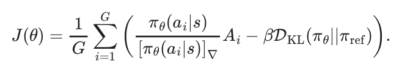
This leads to PPO or GRPO implementations where the second policy gradient and clipping logic can be omitted, making the optimizer far closer to standard policy gradient.
#6.2.5 Group Relative Policy Optimization
The DeepSeekMath paper describes some implementation details of GRPO that differ from PPO [13], especially if comparing to a standard application of PPO from Deep RL rather than language models. For example, the KL penalty within the RLHF optimization (recall the KL penalty is also used when training reasoning models on verifiable rewards without a reward model) is applied directly in the loss update rather than to the reward function. Where the standard KL penalty application for RLHF is applied as r = rθ −βDKL, the GRPO implementation is along the lines of:
L = Lpolicy gradient + β ∗DKL
Though, there are multiple ways to implement this. Traditionally, the KL distance is computed with respect to each token in the completion to a prompt s. For reasoning training, multiple completions are sampled from one prompt, and there are multiple prompts in one batch, so the KL distance will have a shape of [B, L, N], where B is the batch size, L is the sequence length, and N is the number of completions per prompt.
Putting it together, using the first loss accumulation, the pseudocode can be written as below.
# B: Batch Size, L: Sequence Length, G: Number of Generations
#1
mean_grouped_rewards = rewards.view(-1, self.num_generations).mean(dim=1)
std_grouped_rewards = rewards.view(-1, self.num_generations).std(dim=1)
mean_grouped_rewards =
mean_grouped_rewards.repeat_interleave(self.num_generations, dim=0)
std_grouped_rewards = std_grouped_rewards.repeat_interleave(self.num_generations,
dim=0)
advantages = (rewards - mean_grouped_rewards) / (std_grouped_rewards + 1e-4)
advantages = advantages.unsqueeze(1) # Shape: (B*G, 1)
#2
ratio = torch.exp(new_per_token_logps - per_token_logps) # Shape: (B*G, L)
eps = self.cliprange # e.g. 0.2
pg_losses1 = -advantages * ratio # Shape: (B*G, L)
pg_losses2 = -advantages * torch.clamp(ratio, 1.0 - eps, 1.0 + eps) # Shape:
(B*G, L)
pg_loss_max = torch.max(pg_losses1, pg_losses2) # Shape: (B*G, L)
#3
per_token_loss = pg_loss_max + self.beta * per_token_kl # Shape: (B*G, L)
#4
loss = ((per_token_loss * completion_mask).sum(dim=1) /
completion_mask.sum(dim=1)).mean()
#5
with torch.no_grad():
clip_frac = ((pg_losses2 > pg_losses1).float() * completion_mask).sum() /
completion_mask.sum()
approx_kl = 0.5 * ((new_per_token_logps - per_token_logps)**2).mean()For more details on how to interpret this code, see the PPO section above. The core differences from the PPO example are:
- Advantage computation: GRPO normalizes rewards relative to the group (mean and std across generations for the same prompt) rather than using a learned value function as baseline.
- No value network: GRPO removes the value model entirely, eliminating
vf\_lossand the associated complexity. - KL penalty placement: GRPO adds the KL penalty directly to the loss rather than subtracting it from the reward (this is the standard implementation, but more versions exist on how the KL is applied).
#RLOO VS. GRPO
The advantage updates for RLOO follow very closely to GRPO, highlighting the conceptual similarity of the algorithm when taken separately from the PPO style clipping and KL penalty details. Specifically, for RLOO, the advantage is computed relative to a baseline that is extremely similar to that of GRPO – the completion reward relative to the others for that same question. Concisely, the RLOO advantage estimate follows as (expanded from TRL’s implementation):
# rloo_k --> number of completions per prompt
# rlhf_reward --> Initially a flat tensor of total rewards for all completions.
Length B = N x k
rlhf_reward = rlhf_reward.reshape(rloo_k, -1) #
# Now, Shape: (k, N), each column j contains the k rewards for prompt j.
baseline = (rlhf_reward.sum(0) - rlhf_reward) / (rloo_k - 1)
# baseline --> Leave-one-out baseline rewards. Shape: (k, N)
# baseline[i, j] is the avg reward of samples i' != i for prompt j.
advantages = rlhf_reward - baseline
# advantages --> Same Shape: (k, N)
advantages = advantages.flatten() # Same shape as original tensorThe rest of the implementation details for RLOO follow the other trade-offs of implementing policy-gradient.
#6.3 Auxiliary Topics
In order to master the application of policy-gradient algorithms, there are countless other considerations. Here we consider some of the long-tail of complexities in successfully deploying a policy-gradient RL algorithm.
#6.3.1 Generalized Advantage Estimation (GAE)
Generalized Advantage Estimation (GAE) is an alternate method to compute the advantage for policy gradient algorithms [4] that better balances the bias-variance tradeoff. Traditional single-step advantage estimates can introduce too much bias, while using complete trajectories can suffer from high variance. GAE computes an exponentially-weighted average of multi-step advantage estimates, where the λ hyperparameter controls the bias-variance tradeoff—ranging from single-step TD (λ = 0) to full trajectory returns (λ = 1); λ = 0.95 is a common default for LLM fine-tuning.
Advantage estimates can take many forms, but we can define a n step advantage estimator (similar to the TD residual at the beginning of the chapter) as follows:
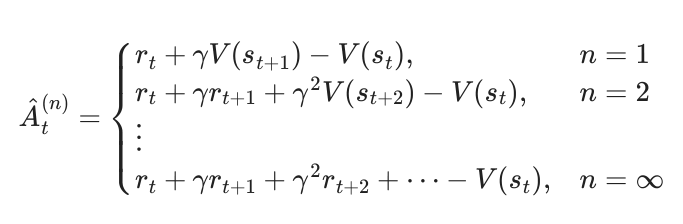
Here a shorter n will have lower variance but higher bias as we are attributing more learning power to each trajectory – it can overfit. GAE attempts to generalize this formulation into a weighted multi-step average instead of a specific n. To start, we must define the temporal difference (TD) residual of predicted value.
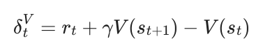
To utilize this, we introduce another variable λ as the GAE mixing parameter. This folds into an exponential decay of future advantages we wish to estimate:
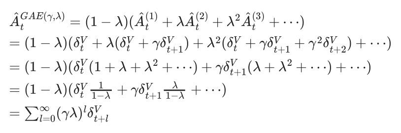
Intuitively, this can be used to average multi-step estimates of Advantage in an elegant fashion. An example implementation is shown below:
# GAE (token-level) for LM RLHF
#
# B: Batch Size
# L: Length
# Inputs:
# rewards: (B, L) post-KL per-token rewards
# values: (B, L) current V_theta(s_t)
# done_mask: (B, L) 1.0 at terminal token (EOS or penalized trunc), else 0.0
# gamma: float (often 1.0),
# lam (short for lambda): float in [0,1]
# (Padding beyond terminal should have rewards=0, values=0)
B, L = rewards.shape
advantages = torch.zeros_like(rewards)
next_v = torch.zeros(B, device=rewards.device, dtype=rewards.dtype)
gae = torch.zeros(B, device=rewards.device, dtype=rewards.dtype)
for t in reversed(range(L)):
not_done = 1.0 - done_mask[:, t]
delta = rewards[:, t] + gamma * not_done * next_v - values[:, t]
gae = delta + gamma * lam * not_done * gae
advantages[:, t] = gae
next_v = values[:, t]
targets = advantages + values # y_t for value regression
advantages = advantages.detach() # for policy lossThe backward loop accumulates temporal-difference (TD) errors (δt = rt + γV (st+1) −V (st)), which measure how much better or worse the actual outcome was compared to the value function’s prediction, with exponential decay (γλ)l. At terminal tokens, not\_done=0 prevents bootstrapping from future states and resets the GAE accumulator, so each episode’s advantages are computed independently (since the loop runs backward, the terminal token cleanly stops the exponentially-weighted accumulation at episode boundaries—this makes the implementation packing-friendly, correctly handling multiple sequences concatenated into one). The final targets serve as regression targets for the separate value function learned outside this GAE loop, while the detached advantages weight the policy gradient—detached so that policy updates don’t backpropagate through the value network. In RLHF for language models, γ = 1.0 is common because episodes are short token sequences where undiscounted credit assignment is preferred (and often all of the tokens in one).
#6.3.2 Double Regularization
We’ve seen in this chapter two types of regularization. One is built into algorithms like PPO with step-size constraints, and the other is a KL divergence based distance penalty relative to the start of the optimization.
Many popular policy gradient algorithms from Deep Reinforcement Learning, including PPO and its predecessors, originated due to the need to control the learning process of the agent. In RLHF, as discussed extensively in Chapter 15 on Regularization and in Chapter 3 on Problem Formulation, there is a built-in regularization term via the distance penalty relative to the original policy one is fine-tuning. In this view, a large part of the difference between algorithms like PPO (which have internal step-size regularization) and REINFORCE (which is simpler, and to which PPO reduces under certain hyperparameters) is far less meaningful for fine-tuning language models than training agents from scratch.
In PPO, the objective that handles capping the step-size of the update is known as the surrogate objective. To monitor how much the PPO regularization is impacting updates in RLHF, one can look at the clip fraction variable in many popular implementations, which is the percentage of samples in the batch where the gradients are clipped by this regularizer in PPO. These gradients are reduced to a maximum value.
In practice with language models, algorithms like PPO and GRPO are run with only one gradient step per batch, which means that the PPO-native regularization is never applied (as clipping can only occur within a batch when the policy changes substantially) and the KL distances penalties predominate.
#6.3.3 Further Reading
As RLHF has cemented itself at the center of modern post-training, other policy-gradient RL algorithms and RL algorithms generally have been proposed to improve the training process, but they have not had a central role in governing best practices. Examples for further reading include:
- Pairwise Proximal Policy Optimization (P3O) [32] uses pairwise data directly in a PPO-style policy update without learning an intermediate reward model.
- Off-policy policy-gradient algorithms could enable further asynchronous training, such as Contrastive Policy Gradient (CoPG) [33] (a generalization of the direct alignment algorithm IPO and vanilla policy gradient), which was used by Cohere for their Command A model [34].
- Other implementations of REINFORCE algorithms have been designed for language models, such as ReMax [35], which implements a baseline normalization designed specifically to accommodate the sources of uncertainty from reward model inference.
- Some foundation models, such as Apple Intelligence Foundation Models [36] or Kimi k1.5 reasoning model [37], have used variants of Mirror Descent Policy Optimization (MDPO) [38]. Research is still developing further on the fundamentals here [39], but Mirror Descent is an optimization method rather than directly a policy gradient algorithm. What is important here is that it is substituted in very similarly to existing RL infrastructure.
- Decoupled Clip and Dynamic sAmpling Policy Optimization (DAPO) proposes 4 modifications to GRPO to better suit reasoning language models, where long traces are needed and new, underutilized tokens need to be increased in probability [25]. The changes are: 1, have two different clip hyperparameters, εlow and εhigh, so clipping on the positive side of the logratio can take bigger steps for better exploration; 2, dynamic sampling, which removes all samples with reward = 0 or reward = 1 for all samples in the batch (no learning signal); 3, use the per token loss as discussed above in Implementation: GRPO; and 4, a soft penalty on samples that are too long to avoid trying to learn from truncated answers.
- Value-based Augmented Proximal Policy Optimization (VAPO) [40] combines optimizations from DAPO (including clip-higher, token level policy-gradient, and different length normalization) with insights from Value-Calibrated PPO [41] to pretrain the value function and length-adaptive GAE to show the promise of value base methods relative to GRPO.
A. Ahmadian et al., “Back to basics: Revisiting reinforce style optimization for
learning from human feedback in llms,” in Annual meeting of the association for
computational linguistics (ACL), 2024.
[2]Z. Wang et al., “HelpSteer2-preference: Complementing ratings with preferences,” in International conference on learning representations (ICLR), 2025.
[3]M. L. Puterman, “Markov decision processes,” Handbooks in operations research and management science, vol. 2, pp. 331–434, 1990.
J. Schulman, P. Moritz, S. Levine, M. Jordan, and P. Abbeel, “High-dimensional
continuous control using generalized advantage estimation,” in Proceedings of the
international conference on learning representations (ICLR), 2016.
[5]R. J. Williams, “Simple statistical gradient-following algorithms for connectionist
reinforcement learning,” Machine learning, vol. 8, pp. 229–256, 1992.
[6]S. C. Huang, A. Ahmadian, and C. F. AI, “Putting RL back in RLHF.”
https://huggingface. co/blog/putting_ rl_back_in_ rlhf_with_ rloo, 2024.
W. Kool, H. van Hoof, and M. Welling, “Buy 4 reinforce samples, get a baseline for free!” 2019.
J. Schulman, F. Wolski, P. Dhariwal, A. Radford, and O. Klimov, “Proximal policy
optimization algorithms,” arXiv preprint arXiv:1707.06347, 2017.
[9]C. Berner et al., “Dota 2 with large scale deep reinforcement learning,” arXiv
preprint arXiv:1912.06680, 2019.
Z. Liu et al., “Understanding R1-zero-like training: A critical perspective,” arXiv preprint arXiv:2503.20783, Mar. 2025, Available: https://arxiv. org/abs/2503. 20783
[11]J. Nocedal and S. J. Wright, Numerical optimization. Springer, 2006.
[12]J. Schulman, S. Levine, P. Abbeel, M. Jordan, and P. Moritz, “Trust region policy
optimization,” in International conference on machine learning, PMLR, 2015, pp.
1889–1897.
Z. Shao et al., “Deepseekmath: Pushing the limits of mathematical reasoning in open language models,” arXiv preprint arXiv:2402.03300, 2024.
[14]A. Liu et al., “Deepseek-v3 technical report,” arXiv preprint arXiv:2412.19437, 2024.
[15]D. Guo et al., “Deepseek-r1: Incentivizing reasoning capability in llms via
reinforcement learning,” arXiv preprint arXiv:2501.12948, 2025.
[16]C. Zheng et al., “Group sequence policy optimization.” 2025. doi:
[17]MiniMax et al., “MiniMax-M1: Scaling test-time compute efficiently with lightning
attention.” 2025. doi: 10.48550/arXiv.2506.13585.
[18]N. Le Roux et al., “Tapered off-policy REINFORCE: Stable and efficient reinforcement learning for LLMs.” 2025. doi: 10.48550/arXiv.2503.14286.
[19]H. Ivison et al., “Unpacking DPO and PPO: Disentangling best practices for learning from preference feedback,” in Advances in neural information processing systems
(NeurIPS), 2024.
[20]L. Ouyang et al., “Training language models to follow instructions with human
feedback,” Advances in neural information processing systems, vol. 35, pp. 27730– 27744, 2022.
[21]N. Lambert et al., “Tulu 3: Pushing frontiers in open language model post-training,” arXiv preprint arXiv:2411.15124, 2024.
[22]J. Schulman, “Approximating KL-divergence.” http://joschu. net/blog/ kl-approx. html, 2016.
[23]S. Huang, M. Noukhovitch, A. Hosseini, K. Rasul, W. Wang, and L. Tunstall, “The n+ implementation details of RLHF with PPO: A case study on TL;DR summarization,” in First conference on language modeling, 2024. Available: https://openreview.
[24]L. Weng, “Policy gradient algorithms,” lilianweng.github.io, 2018, Available:
https://lilianweng. github.io/ posts/2018- 04-08-policy- gradient/
Q. Yu et al., “DAPO: An open-source LLM reinforcement learning system at scale.” 2025.
[26]A. Baheti, X. Lu, F. Brahman, R. L. Bras, M. Sap, and M. Riedl, “Leftover lunch:
Advantage-based offline reinforcement learning for language models,” in
International conference on learning representations (ICLR), 2024.
[27]M. Noukhovitch, S. Huang, S. Xhonneux, A. Hosseini, R. Agarwal, and A. Courville, “Asynchronous RLHF: Faster and more efficient off-policy RL for language models,” in International conference on learning representations (ICLR), 2025.
[28]B. Wu et al., “LlamaRL: A distributed asynchronous reinforcement learning
framework for efficient large-scale LLM trainin,” arXiv preprint arXiv:2505.24034,
2025.
[29]W. Fu et al., “AReaL: A large-scale asynchronous reinforcement learning system for language reasoning,” arXiv preprint arXiv:2505.24298, 2025.
[30]P. I. Team et al., “INTELLECT-2: A reasoning model trained through globally
decentralized reinforcement learning.” 2025. Available: https://arxiv. org/abs/2505. 07291
[31]N. L. Roux et al., “Tapered off-policy REINFORCE: Stable and efficient reinforcement learning for LLMs,” arXiv preprint arXiv:2503.14286, 2025.
[32]T. Wu, B. Zhu, R. Zhang, Z. Wen, K. Ramchandran, and J. Jiao, “Pairwise proximal policy optimization: Harnessing relative feedback for llm alignment,” arXiv preprint arXiv:2310.00212, 2023.
[33]Y. Flet-Berliac et al., “Contrastive policy gradient: Aligning LLMs on sequence-level scores in a supervised-friendly fashion,” in Conference on empirical methods in
natural language processing (EMNLP), 2024.
[34]T. Cohere et al., “Command a: An enterprise-ready large language model,” arXiv
preprint arXiv:2504.00698, 2025.
[35]Z. Li et al., “Remax: A simple, effective, and efficient reinforcement learning method for aligning large language models,” in Forty-first international conference on
machine learning, 2023.
[36]T. Gunter et al., “Apple intelligence foundation language models,” arXiv preprint
arXiv:2407.21075, 2024.
[37]K. Team et al., “Kimi k1. 5: Scaling reinforcement learning with llms,” arXiv preprint arXiv:2501.12599, 2025.
[38]M. Tomar, L. Shani, Y. Efroni, and M. Ghavamzadeh, “Mirror descent policy
optimization,” in International conference on learning representations (ICLR), 2022.
[39]Y. Zhang et al., “Improving LLM general preference alignment via optimistic online mirror descent,” arXiv preprint arXiv:2502.16852, 2025.
[40]Y. Yuan et al., “VAPO: Efficient and reliable reinforcement learning for advanced
reasoning tasks,” arXiv preprint arXiv:2504.05118, 2025.
[41]Y. Yuan, Y. Yue, R. Zhu, T. Fan, and L. Yan, “What’s behind PPO’s collapse in long-
CoT? Value optimization holds the secret,” arXiv preprint arXiv:2503.01491, 2025.